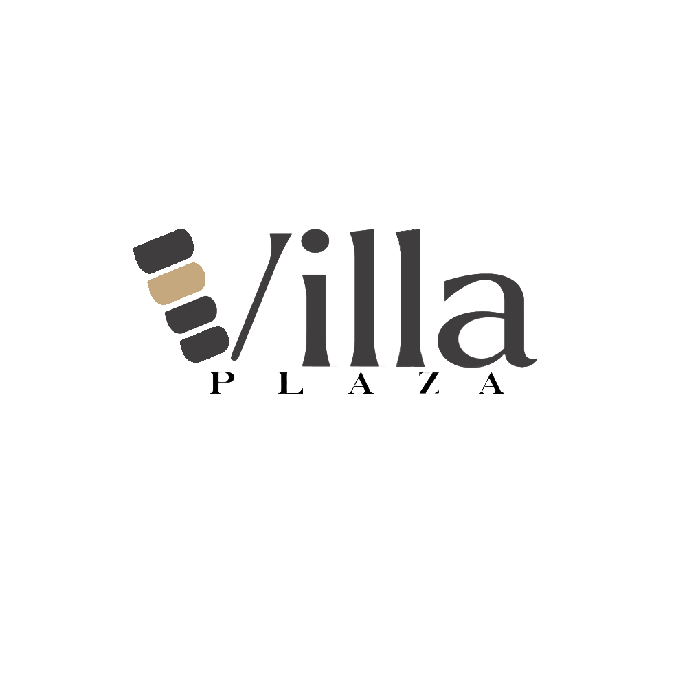

KSU Salina Mental Health Services Logo
October 21, 2025
During my time at KSU Salina Campus, I had the opportunity to enter a logo design competition hosted by the Mental Health Services. This project was more personal because I was a student who regularly went to these sessions. Initially, started in Illustrator to line the hand from a drawing, position shapes, and set fonts. Then transitioned to Photoshop to increase contrast and white/black levels.

IHOP KSU Flyer
October 16, 2025
A redesign for the KSU Salina College's weekly IHOP discounts for students. The poster is displayed weekly every Sunday on Instagram stories and on TVs around campus. Each text and graphic element was derived from the previous design but altered to match the color scheme and the new logo. Everything was done in Photoshop.

Villa Plaza Logo
June 07, 2024
Villa Plaza is a constructive building agency that helps assign new business owners advantageous establishments. Initially, I started the sketches by connecting the available buildings in the plaza with sleek modern typography. I used Illustrator to construct the shapes in the V. Capturing the essence of repetition, proximity, and alignment as the shapes decreased in size. Typography: Inspired by the sleek text shapes of the album cover, Blond, designed by Wolfgang Tillmans, yet not using an italic shape, keeps boldness. Lastly, Angelica presented a choice of two colors: walnut and copper. I presented both and had her pick which one she liked the most.